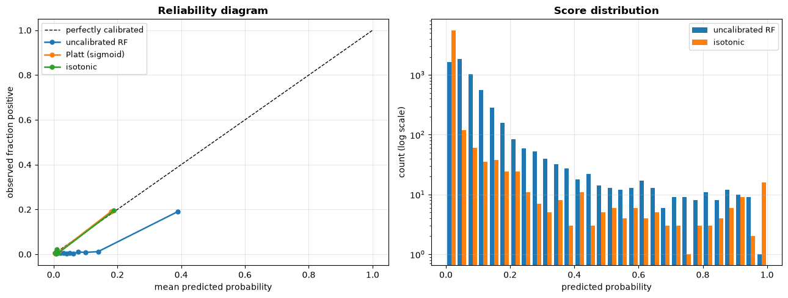
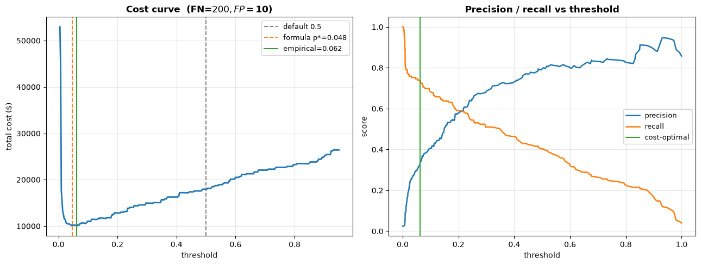
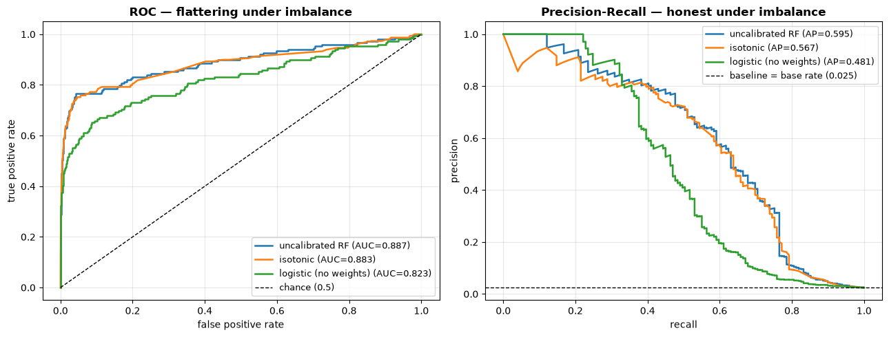

How do you handle imbalance, calibration, and thresholds?#
Topics: Class Imbalance · Resampling & SMOTE · Class Weights · Cost-Sensitive Learning · Probability Calibration · Brier Score · Decision Threshold · ROC-AUC vs PR-AUC
Almost every high-value classification problem a data scientist is asked about — fraud, churn, default, conversion, click — is imbalanced, and in almost every one of them the score matters less than the decision made from it. This notebook covers the three steps between a fitted model and a business action:
train something sensible when one class is rare,
make the predicted probabilities mean what they say,
pick the cutoff that maximises expected value rather than defaulting to 0.5.
Step 3 is where this chapter hands off to bd2_cost_benefit.
Abbreviation Reference#
Abbreviation |
Full Name |
|---|---|
AUC |
Area Under the Curve |
ECE |
Expected Calibration Error |
FN |
False Negative |
FP |
False Positive |
PR-AUC |
Area Under the Precision-Recall Curve |
ROC |
Receiver Operating Characteristic |
SMOTE |
Synthetic Minority Over-sampling Technique |
TN |
True Negative |
TP |
True Positive |
import numpy as np
import pandas as pd
import matplotlib.pyplot as plt
from sklearn.datasets import make_classification
from sklearn.model_selection import train_test_split
from sklearn.linear_model import LogisticRegression
from sklearn.ensemble import RandomForestClassifier
from sklearn.metrics import (
accuracy_score, precision_score, recall_score, f1_score,
roc_auc_score, average_precision_score, brier_score_loss,
confusion_matrix, precision_recall_curve, roc_curve,
)
RANDOM_STATE = 42
np.random.seed(RANDOM_STATE)
# A deliberately imbalanced problem: ~2% positives, the rough base rate of
# payment fraud or of churn in a monthly-subscription business.
X, y = make_classification(
n_samples=20_000, n_features=20, n_informative=6, n_redundant=4,
n_clusters_per_class=2, weights=[0.98, 0.02], flip_y=0.01,
random_state=RANDOM_STATE,
)
X_train, X_test, y_train, y_test = train_test_split(
X, y, test_size=0.3, stratify=y, random_state=RANDOM_STATE
)
print(f"train: {X_train.shape[0]:,} rows | positives: {y_train.sum():,} "
f"({y_train.mean():.2%})")
print(f"test: {X_test.shape[0]:,} rows | positives: {y_test.sum():,} "
f"({y_test.mean():.2%})")
print(f"\nMajority-class baseline accuracy: {1 - y_test.mean():.4f}")
train: 14,000 rows | positives: 348 (2.49%)
test: 6,000 rows | positives: 149 (2.48%)
Majority-class baseline accuracy: 0.9752
1. Why accuracy breaks under imbalance#
What it is#
When one class is rare, a model that never predicts the positive class still scores extremely well on accuracy
At a 2% base rate, “always predict negative” is 98% accurate and 100% useless
Accuracy averages over classes weighted by frequency, so the rare class — the one you actually care about — contributes almost nothing to the number
Key intuition#
Accuracy answers “how often am I right?”; the business asks “of the frauds, how many did I catch, and how many customers did I annoy to catch them?”
Those are recall and precision, and neither is recoverable from accuracy
The rarer the positive class, the more accuracy is just a restatement of the base rate
When to use accuracy#
Roughly balanced classes and symmetric error costs (FP and FN hurt about equally)
As a sanity check against the majority-class baseline — never as the headline metric
When not to use#
Any imbalance beyond ~70/30
Any problem where FP and FN have different costs — which is almost all of them
# The "model" that does nothing, versus a real one.
dummy_pred = np.zeros_like(y_test)
clf_plain = LogisticRegression(max_iter=1000, random_state=RANDOM_STATE)
clf_plain.fit(X_train, y_train)
plain_pred = clf_plain.predict(X_test)
plain_prob = clf_plain.predict_proba(X_test)[:, 1]
def score_row(name, y_true, y_pred, y_prob=None):
return {
"model": name,
"accuracy": accuracy_score(y_true, y_pred),
"precision": precision_score(y_true, y_pred, zero_division=0),
"recall": recall_score(y_true, y_pred, zero_division=0),
"f1": f1_score(y_true, y_pred, zero_division=0),
"roc_auc": roc_auc_score(y_true, y_prob) if y_prob is not None else np.nan,
"pr_auc": average_precision_score(y_true, y_prob) if y_prob is not None else np.nan,
}
comparison = pd.DataFrame([
score_row("always-negative", y_test, dummy_pred),
score_row("logistic (default 0.5)", y_test, plain_pred, plain_prob),
])
print(comparison.round(4).to_string(index=False))
print("\nConfusion matrix, logistic @ 0.5 [[TN, FP], [FN, TP]]:")
print(confusion_matrix(y_test, plain_pred))
tn, fp, fn, tp = confusion_matrix(y_test, plain_pred, labels=[0, 1]).ravel()
print(f"\nPositives in test set: {y_test.sum()} | flagged: {plain_pred.sum()} "
f"| actually caught (TP): {tp} | missed (FN): {fn}")
model accuracy precision recall f1 roc_auc pr_auc
always-negative 0.9752 0.000 0.0000 0.0000 NaN NaN
logistic (default 0.5) 0.9805 0.881 0.2483 0.3874 0.823 0.4808
Confusion matrix, logistic @ 0.5 [[TN, FP], [FN, TP]]:
[[5846 5]
[ 112 37]]
Positives in test set: 149 | flagged: 42 | actually caught (TP): 37 | missed (FN): 112
Interview Q&A#
Q: Your fraud model is 99% accurate. Is it good? A: Unanswerable as stated — I’d first ask the base rate. If fraud is 1% of transactions, 99% accuracy is exactly what “flag nothing” achieves, so the number carries no information. I’d ask for the confusion matrix and report precision and recall at the operating threshold, plus PR-AUC across thresholds.
Q: Which single metric would you report to a PM instead? A: Neither in isolation. I’d give recall at a precision the business can tolerate — “we catch 62% of fraud while 1 in 4 flags is a false alarm” — because that phrasing exposes the tradeoff the PM actually controls.
Q: Why not just use F1? A: F1 weights precision and recall equally, which is a business assumption in disguise, and almost always the wrong one. Missing a $5,000 fraud and annoying one customer are not equal-cost errors. F1 is a reasonable default only when you genuinely have no cost information — see §5 for what to do when you do.
Gotchas#
Reporting accuracy on an imbalanced problem is one of the fastest ways to fail an interview screen
sklearn’s.predict()silently applies a 0.5 cutoff — under heavy imbalance it can return zero positives even from a model with excellent rankingA high ROC-AUC with terrible precision is normal under imbalance, not a contradiction (see §6)
2. Resampling: undersampling, oversampling, SMOTE#
What it is#
Random undersampling — drop majority-class rows until the ratio improves. Fast, but throws away real data
Random oversampling — duplicate minority rows. Keeps all data, but exact duplicates encourage overfitting
SMOTE — create synthetic minority points by interpolating between a minority point and one of its minority nearest neighbours
Key intuition#
SMOTE fills in the minority region rather than stacking copies on existing points, so the decision boundary is pushed out instead of memorised
The interpolation is linear: a new point sits somewhere on the segment joining two real minority examples
Formula (SMOTE)#
For a minority point \(x_i\) and a randomly chosen minority neighbour \(x_{nn}\):
When to use#
Severe imbalance (< 5% positives) where the model predicts the minority class rarely or never
Undersampling specifically when the majority class is huge and training cost matters
When not to use#
Never resample the validation or test set — they must keep the real base rate or every estimate is biased
When the minority class is tiny in absolute terms (< ~100 rows), SMOTE interpolates noise into more noise
With high-cardinality categorical or sparse text features, where “between two points” is not meaningful
When class weights (§3) already solve it — they are cheaper and leave the data honest
from sklearn.neighbors import NearestNeighbors
def smote(X_min, n_new, k=5, random_state=RANDOM_STATE):
"""Minimal SMOTE. Interpolates between a minority point and a random
minority neighbour. Implemented here so the book gains no dependency;
in production use imbalanced-learn's SMOTE."""
rng = np.random.default_rng(random_state)
k = min(k, len(X_min) - 1)
nn = NearestNeighbors(n_neighbors=k + 1).fit(X_min)
_, idx = nn.kneighbors(X_min)
base = rng.integers(0, len(X_min), n_new)
neigh = idx[base, rng.integers(1, k + 1, n_new)] # column 0 is self
lam = rng.random((n_new, 1))
return X_min[base] + lam * (X_min[neigh] - X_min[base])
X_min = X_train[y_train == 1]
n_new = (y_train == 0).sum() - (y_train == 1).sum()
X_synth = smote(X_min, n_new)
X_smote = np.vstack([X_train, X_synth])
y_smote = np.concatenate([y_train, np.ones(len(X_synth), dtype=int)])
# Random undersampling of the majority class, for comparison.
rng = np.random.default_rng(RANDOM_STATE)
maj_idx = np.flatnonzero(y_train == 0)
min_idx = np.flatnonzero(y_train == 1)
keep = rng.choice(maj_idx, size=len(min_idx), replace=False)
under = np.concatenate([keep, min_idx])
X_under, y_under = X_train[under], y_train[under]
print(f"original : {len(y_train):>6,} rows | {y_train.mean():.2%} positive")
print(f"SMOTE : {len(y_smote):>6,} rows | {y_smote.mean():.2%} positive")
print(f"undersamp: {len(y_under):>6,} rows | {y_under.mean():.2%} positive")
original : 14,000 rows | 2.49% positive
SMOTE : 27,304 rows | 50.00% positive
undersamp: 696 rows | 50.00% positive
# Fit the same estimator on each training set. Test set is UNTOUCHED and keeps
# the real 2% base rate -- resampling it would invalidate every number below.
rows = []
fitted = {}
for name, Xt, yt in [
("baseline", X_train, y_train),
("SMOTE", X_smote, y_smote),
("undersample", X_under, y_under),
]:
m = LogisticRegression(max_iter=1000, random_state=RANDOM_STATE).fit(Xt, yt)
prob = m.predict_proba(X_test)[:, 1]
fitted[name] = prob
rows.append(score_row(name, y_test, (prob >= 0.5).astype(int), prob))
resample_cmp = pd.DataFrame(rows)
print(resample_cmp.round(4).to_string(index=False))
print("\nNote: recall rises sharply, precision falls, and PR-AUC barely moves --")
print("resampling mostly SHIFTS the operating point rather than improving ranking.")
model accuracy precision recall f1 roc_auc pr_auc
baseline 0.9805 0.8810 0.2483 0.3874 0.8230 0.4808
SMOTE 0.7918 0.0827 0.7315 0.1486 0.8325 0.4432
undersample 0.7703 0.0747 0.7248 0.1355 0.8196 0.3940
Note: recall rises sharply, precision falls, and PR-AUC barely moves --
resampling mostly SHIFTS the operating point rather than improving ranking.
Interview Q&A#
Q: Should you apply SMOTE before or after the train/test split?
A: Strictly after, and only to the training fold. Generating synthetic points
before splitting lets interpolated copies of a test-set row leak into training,
which inflates every metric. Inside cross-validation the resampling must happen
within each fold — that is exactly what imblearn’s Pipeline exists to
enforce.
Q: SMOTE raised recall a lot but precision collapsed. Did it help? A: Look at PR-AUC, not the point metrics. In the table above PR-AUC barely moves, which tells me the ranking is essentially unchanged — resampling mostly relocated the 0.5 cutoff. That is a threshold decision dressed up as a data decision, and §5 does it explicitly and more cheaply.
Q: When would you undersample rather than oversample? A: When the majority class is large enough that I lose little by dropping rows and training time or memory is the binding constraint. I’d prefer bagged undersampling — several undersampled models ensembled — so I use the majority data across models rather than discarding it once.
Gotchas#
Resampling distorts the base rate, so predicted probabilities are no longer calibrated — §4 becomes mandatory, not optional
SMOTE interpolates in feature space; run it after scaling and encoding, never on raw mixed-type columns
Synthetic points drawn between two minority examples that straddle the boundary can land inside the majority region, manufacturing label noise
3. Class weights and cost-sensitive learning#
What it is#
Rather than changing the data, change the loss: make each minority-class error count for more
class_weight='balanced'sets \(w_c = n / (K \cdot n_c)\) — inversely proportional to class frequencyCustom weights let you encode the actual cost ratio instead of just the frequency ratio
Key intuition#
Oversampling a class 20× and weighting its loss 20× are near-equivalent in expectation, but weighting costs no extra rows and adds no synthetic noise
This is the cheapest intervention available and should almost always be tried before SMOTE
Formula#
Weighted log-loss, with \(w_1\) the positive-class weight:
Setting \(w_1/w_0 = C_{FN}/C_{FP}\) makes the loss a direct proxy for business cost.
When to use#
First resort for any imbalanced problem
Supported nearly everywhere:
LogisticRegression,RandomForestClassifier,SVC, and viascale_pos_weightin XGBoost/LightGBM
When not to use#
When you need calibrated probabilities out of the box — weighting skews them just as resampling does
When the imbalance is so extreme (< 0.1%) that reweighting mostly amplifies noise; consider anomaly detection framing instead
rows = []
for name, weight in [
("no weights", None),
("balanced", "balanced"),
("custom 10:1 (cost)", {0: 1, 1: 10}),
]:
m = LogisticRegression(max_iter=1000, class_weight=weight,
random_state=RANDOM_STATE).fit(X_train, y_train)
prob = m.predict_proba(X_test)[:, 1]
fitted[name] = prob
rows.append(score_row(name, y_test, (prob >= 0.5).astype(int), prob))
weight_cmp = pd.DataFrame(rows)
print(weight_cmp.round(4).to_string(index=False))
n_pos, n_neg = (y_train == 1).sum(), (y_train == 0).sum()
print(f"\n'balanced' implies positive weight ~ {n_neg / n_pos:.1f}x")
print(f"XGBoost/LightGBM equivalent: scale_pos_weight = {n_neg / n_pos:.1f}")
model accuracy precision recall f1 roc_auc pr_auc
no weights 0.9805 0.8810 0.2483 0.3874 0.8230 0.4808
balanced 0.7870 0.0809 0.7315 0.1457 0.8315 0.4347
custom 10:1 (cost) 0.9632 0.3448 0.5369 0.4199 0.8301 0.4555
'balanced' implies positive weight ~ 39.2x
XGBoost/LightGBM equivalent: scale_pos_weight = 39.2
Interview Q&A#
Q: Class weights or SMOTE — which do you reach for first? A: Class weights, essentially always. One argument, no synthetic data, no leakage risk inside cross-validation, no extra training rows. I’d only move to SMOTE if weighting failed to move recall and I had reason to believe the minority region was genuinely under-sampled rather than just rare.
Q: What weight would you set?
A: If I have cost information, \(w_1/w_0 = C_{FN}/C_{FP}\) — that makes the
training loss a stand-in for the business objective. If I don’t, 'balanced'
as a starting point, then tune it as a hyperparameter against a
cost-aware validation metric rather than F1.
Gotchas#
class_weight='balanced'optimises for the frequency ratio, which is rarely the cost ratio — they coincide only by accidentWeighting changes the loss surface, so it interacts with regularisation strength; re-tune
Cafter changing weightsIn XGBoost,
scale_pos_weightand a customeval_metricmust agree, or early stopping optimises something you did not intend
4. Probability calibration#
What it is#
A model is calibrated if, among cases it scores 0.30, about 30% are actually positive
Ranking quality (AUC) and calibration are independent: a model can rank perfectly and still be badly calibrated, and vice versa
Platt scaling fits a logistic regression on the raw scores; isotonic regression fits a non-parametric monotone step function
Key intuition#
AUC only cares about order. Calibration cares about level
Any expected-value calculation — “flagging this saves $40” — multiplies a probability by a payoff, so an uncalibrated probability makes the arithmetic wrong even when the ranking is right
This is precisely the bridge into bd2_cost_benefit
Formula#
Brier score (lower is better) — mean squared error on probabilities:
Expected Calibration Error — average gap between confidence and accuracy across \(M\) bins:
When to use#
Any time the probability itself is consumed: expected value, risk scores, pricing, triage cut-offs, downstream models
After any resampling or class weighting, both of which decalibrate by construction
When not to use#
Pure ranking problems (which 100 accounts should a rep call today?) where only order matters
Isotonic specifically with < ~1,000 calibration rows — it overfits badly; prefer Platt
from sklearn.calibration import CalibratedClassifierCV, calibration_curve
# Random forests are famously over-confident at the extremes: averaging votes
# pushes probabilities away from 0 and 1.
rf = RandomForestClassifier(
n_estimators=300, min_samples_leaf=5,
class_weight="balanced", n_jobs=-1, random_state=RANDOM_STATE,
).fit(X_train, y_train)
rf_prob = rf.predict_proba(X_test)[:, 1]
# Calibrate on held-out folds of the TRAINING data only.
platt = CalibratedClassifierCV(
RandomForestClassifier(n_estimators=300, min_samples_leaf=5,
class_weight="balanced", n_jobs=-1,
random_state=RANDOM_STATE),
method="sigmoid", cv=3,
).fit(X_train, y_train)
iso = CalibratedClassifierCV(
RandomForestClassifier(n_estimators=300, min_samples_leaf=5,
class_weight="balanced", n_jobs=-1,
random_state=RANDOM_STATE),
method="isotonic", cv=3,
).fit(X_train, y_train)
probs = {
"uncalibrated RF": rf_prob,
"Platt (sigmoid)": platt.predict_proba(X_test)[:, 1],
"isotonic": iso.predict_proba(X_test)[:, 1],
}
def ece(y_true, y_prob, n_bins=10):
edges = np.linspace(0, 1, n_bins + 1)
idx = np.digitize(y_prob, edges[1:-1])
total = 0.0
for b in range(n_bins):
m = idx == b
if m.sum():
total += m.sum() / len(y_prob) * abs(y_true[m].mean() - y_prob[m].mean())
return total
cal = pd.DataFrame([
{"model": k,
"roc_auc": roc_auc_score(y_test, v), # ranking -- barely changes
"pr_auc": average_precision_score(y_test, v),
"brier": brier_score_loss(y_test, v), # calibration -- improves
"ece": ece(y_test, v)}
for k, v in probs.items()
])
print(cal.round(5).to_string(index=False))
print("\nROC-AUC is near-identical across the three -- calibration does not")
print("change the RANKING. Brier and ECE are what move.")
model roc_auc pr_auc brier ece
uncalibrated RF 0.88740 0.59482 0.02238 0.06762
Platt (sigmoid) 0.88585 0.57664 0.01460 0.00475
isotonic 0.88256 0.56685 0.01466 0.00394
ROC-AUC is near-identical across the three -- calibration does not
change the RANKING. Brier and ECE are what move.
fig, axes = plt.subplots(1, 2, figsize=(13, 5))
ax = axes[0]
ax.plot([0, 1], [0, 1], "k--", lw=1, label="perfectly calibrated")
for name, p in probs.items():
frac_pos, mean_pred = calibration_curve(y_test, p, n_bins=10, strategy="quantile")
ax.plot(mean_pred, frac_pos, "o-", lw=1.8, ms=5, label=name)
ax.set_xlabel("mean predicted probability")
ax.set_ylabel("observed fraction positive")
ax.set_title("Reliability diagram", fontweight="bold")
ax.legend(fontsize=9)
ax.grid(alpha=0.3)
ax = axes[1]
ax.hist([probs["uncalibrated RF"], probs["isotonic"]], bins=30,
label=["uncalibrated RF", "isotonic"], log=True)
ax.set_xlabel("predicted probability")
ax.set_ylabel("count (log scale)")
ax.set_title("Score distribution", fontweight="bold")
ax.legend(fontsize=9)
ax.grid(alpha=0.3)
plt.tight_layout()
plt.show()

Interview Q&A#
Q: Your model has 0.92 AUC. Are its probabilities trustworthy? A: AUC says nothing about that. AUC is invariant to any monotone transform of the scores, so I could square every probability and AUC would not move while calibration would fall apart. I’d check a reliability diagram and a Brier score before letting anyone multiply those numbers by a dollar figure.
Q: Platt or isotonic? A: Isotonic is more flexible and wins with enough calibration data, but it is non-parametric and overfits on small samples — with a few hundred rows I’d use Platt. Isotonic also produces a step function, so it can only output as many distinct values as it has steps, which occasionally matters downstream.
Q: You applied SMOTE and now the predicted fraud rate is 40%. What happened? A: The model learned the resampled base rate, not the real one. Either calibrate on a held-out set that preserves the true prevalence, or apply a prior-correction to the log-odds. This is the standard reason resampled models cannot be plugged straight into an expected-value calculation.
Gotchas#
Calibrating on the training data leaks — use
CalibratedClassifierCV’s internal CV, or a dedicated calibration splitResampling and class weights both decalibrate; if you use either and then need probabilities, calibration is mandatory
Tree ensembles are over-confident, and neural networks are usually over-confident too — calibration is not a niche concern
Calibration is population-specific: a model calibrated overall can be badly miscalibrated within a segment. Check calibration per slice, as in ds6_validation
Reference#
Platt (1999), Probabilistic Outputs for Support Vector Machines
Niculescu-Mizil & Caruana (2005), Predicting Good Probabilities with Supervised Learning
Guo et al. (2017), On Calibration of Modern Neural Networks
5. Choosing the decision threshold from business costs#
What it is#
0.5is a default, not a decision. It is optimal only when FP and FN cost the sameGiven a cost for each error type, there is a closed-form optimal threshold
Everything upstream — imbalance handling, calibration — exists so that this step is valid
Key intuition#
The model outputs a probability; the business supplies the costs; the threshold is where they meet
Acting on a case is worth it when expected benefit exceeds expected cost, which for a calibrated \(\hat p\) reduces to a simple ratio
Formula#
Act when \(\hat p \cdot C_{FN} > (1 - \hat p) \cdot C_{FP}\), i.e.
With \(C_{FN} = \$200\) (missed fraud) and \(C_{FP} = \$10\) (review cost), \(p^{*} = 10/210 \approx 0.048\) — an order of magnitude below the default.
When to use#
Whenever the two error types have different costs, which is nearly always
Whenever capacity is fixed (an ops team can review 500 cases/day) — then pick the threshold that fills capacity, which is a budget constraint rather than a cost one
When not to use#
When costs are genuinely unknown and unknowable — then present the precision/recall curve and let the stakeholder choose the operating point
When the model is uncalibrated, in which case the formula is arithmetically valid but the inputs are wrong
# Business costs. In a real project these come from finance/ops, not from you.
COST_FN = 200.0 # a fraudulent transaction that we let through
COST_FP = 10.0 # a legitimate transaction sent to manual review
p_star = COST_FP / (COST_FP + COST_FN)
print(f"Theoretical optimal threshold p* = {p_star:.4f} (vs default 0.500)")
y_prob = probs["isotonic"] # calibrated scores -- required for this to be valid
def total_cost(y_true, y_prob, thr, c_fp=COST_FP, c_fn=COST_FN):
pred = (y_prob >= thr).astype(int)
tn, fp, fn, tp = confusion_matrix(y_true, pred, labels=[0, 1]).ravel()
return fp * c_fp + fn * c_fn, tp, fp, fn
grid = np.linspace(0.005, 0.95, 400)
costs = np.array([total_cost(y_test, y_prob, t)[0] for t in grid])
best_thr = grid[costs.argmin()]
rows = []
for label, thr in [("default", 0.50), ("formula p*", p_star), ("empirical min", best_thr)]:
c, tp, fp, fn = total_cost(y_test, y_prob, thr)
rows.append({"policy": label, "threshold": thr, "TP": tp, "FP": fp, "FN": fn,
"total_cost": c})
thr_cmp = pd.DataFrame(rows)
print()
print(thr_cmp.round(4).to_string(index=False))
saving = thr_cmp.loc[0, "total_cost"] - thr_cmp.loc[2, "total_cost"]
print(f"\nMoving off the default threshold saves ${saving:,.0f} on "
f"{len(y_test):,} test transactions")
print(f"-> ${saving / len(y_test):,.2f} per transaction, with NO model change.")
Theoretical optimal threshold p* = 0.0476 (vs default 0.500)
policy threshold TP FP FN total_cost
default 0.5000 60 15 89 17950.0
formula p* 0.0476 111 264 38 10240.0
empirical min 0.0618 110 220 39 10000.0
Moving off the default threshold saves $7,950 on 6,000 test transactions
-> $1.32 per transaction, with NO model change.
fig, axes = plt.subplots(1, 2, figsize=(13, 5))
ax = axes[0]
ax.plot(grid, costs, lw=2)
ax.axvline(0.50, color="grey", ls="--", lw=1.4, label="default 0.5")
ax.axvline(p_star, color="tab:orange", ls="--", lw=1.4, label=f"formula p*={p_star:.3f}")
ax.axvline(best_thr, color="tab:green", ls="-", lw=1.4, label=f"empirical={best_thr:.3f}")
ax.set_xlabel("threshold")
ax.set_ylabel("total cost ($)")
ax.set_title(f"Cost curve (FN=${COST_FN:.0f}, FP=${COST_FP:.0f})", fontweight="bold")
ax.legend(fontsize=9)
ax.grid(alpha=0.3)
ax = axes[1]
prec, rec, thr_pr = precision_recall_curve(y_test, y_prob)
ax.plot(thr_pr, prec[:-1], label="precision", lw=1.8)
ax.plot(thr_pr, rec[:-1], label="recall", lw=1.8)
ax.axvline(best_thr, color="tab:green", ls="-", lw=1.4, label="cost-optimal")
ax.set_xlabel("threshold")
ax.set_ylabel("score")
ax.set_title("Precision / recall vs threshold", fontweight="bold")
ax.legend(fontsize=9)
ax.grid(alpha=0.3)
plt.tight_layout()
plt.show()

Interview Q&A#
Q: How do you pick a classification threshold? A: I ask what each error costs. With \(C_{FP}\) and \(C_{FN}\) the optimum is \(p^{*} = C_{FP}/(C_{FP}+C_{FN})\), and I’d verify it empirically by sweeping the threshold on a validation set. If costs aren’t available I ask about capacity instead — an ops team that can review 500 cases a day defines the threshold just as well. Only if neither exists would I fall back on maximising F1, and I’d flag that as an assumption.
Q: Why not tune the threshold on the test set? A: Because then it isn’t a test set. The threshold is a fitted parameter like any other — I’d tune it on validation (or within CV) and report the final number once on the held-out set.
Q: The optimal threshold is 0.048. Isn’t the model just badly calibrated? A: No — a low optimal threshold is what asymmetric costs should produce. Missing fraud costs 20× a false alarm, so it is rational to accept many false alarms per catch. A miscalibration problem would show up in the reliability diagram, not in the threshold being far from 0.5.
Gotchas#
The formula assumes calibrated probabilities; on raw resampled scores it produces a confident but wrong answer
Costs drift — a threshold set once and never revisited slowly decays. Re-derive it whenever the cost inputs or the base rate move (ds7_deployment)
Capacity constraints often bind before the cost optimum; if the optimal threshold flags 3× what the team can review, the real threshold is the capacity one
Under class imbalance the cost curve is often quite flat near the optimum — say so, rather than defending a threshold to three decimal places
6. ROC-AUC vs PR-AUC#
What it is#
ROC plots TPR against FPR; PR plots precision against recall
Under heavy imbalance, FPR has an enormous denominator (all the negatives), so even thousands of false positives barely move it — ROC looks optimistic
PR-AUC uses precision, whose denominator is only the predicted positives, so it stays sensitive to false alarms
Key intuition#
ROC answers “how well does the model separate the classes?”
PR answers “if I act on the flagged cases, what fraction are real?” — which is the business question
The ROC baseline is always 0.5; the PR baseline is the base rate, so PR-AUC of 0.30 at a 2% base rate is a 15× lift, not a bad score
When to use#
PR-AUC — imbalanced problems, and any time the positive class is the point
ROC-AUC — roughly balanced classes, or comparing models across datasets with different base rates
When not to use#
Never compare PR-AUC across datasets with different base rates; the baseline moves under you
fig, axes = plt.subplots(1, 2, figsize=(13, 5))
show = {"uncalibrated RF": rf_prob, "isotonic": probs["isotonic"],
"logistic (no weights)": plain_prob}
ax = axes[0]
for name, p in show.items():
fpr, tpr, _ = roc_curve(y_test, p)
ax.plot(fpr, tpr, lw=1.8, label=f"{name} (AUC={roc_auc_score(y_test, p):.3f})")
ax.plot([0, 1], [0, 1], "k--", lw=1, label="chance (0.5)")
ax.set_xlabel("false positive rate")
ax.set_ylabel("true positive rate")
ax.set_title("ROC — flattering under imbalance", fontweight="bold")
ax.legend(fontsize=9, loc="lower right")
ax.grid(alpha=0.3)
ax = axes[1]
base_rate = y_test.mean()
for name, p in show.items():
pr, rc, _ = precision_recall_curve(y_test, p)
ax.plot(rc, pr, lw=1.8,
label=f"{name} (AP={average_precision_score(y_test, p):.3f})")
ax.axhline(base_rate, color="k", ls="--", lw=1,
label=f"baseline = base rate ({base_rate:.3f})")
ax.set_xlabel("recall")
ax.set_ylabel("precision")
ax.set_title("Precision-Recall — honest under imbalance", fontweight="bold")
ax.legend(fontsize=9)
ax.grid(alpha=0.3)
plt.tight_layout()
plt.show()
print(f"Base rate (PR baseline): {base_rate:.4f}")
for name, p in show.items():
print(f" {name:24s} ROC-AUC={roc_auc_score(y_test, p):.3f} "
f"PR-AUC={average_precision_score(y_test, p):.3f} "
f"lift over baseline={average_precision_score(y_test, p) / base_rate:.1f}x")

Base rate (PR baseline): 0.0248
uncalibrated RF ROC-AUC=0.887 PR-AUC=0.595 lift over baseline=24.0x
isotonic ROC-AUC=0.883 PR-AUC=0.567 lift over baseline=22.8x
logistic (no weights) ROC-AUC=0.823 PR-AUC=0.481 lift over baseline=19.4x
Interview Q&A#
Q: ROC-AUC is 0.95 but the model is useless in production. Explain. A: Almost certainly imbalance. FPR’s denominator is every negative case, so at a 2% base rate a model can generate a false positive for every true positive and still show a tiny FPR. The ops team experiences precision, not FPR. I’d report PR-AUC and precision at the operating threshold instead.
Q: Is PR-AUC of 0.30 good? A: Depends entirely on the base rate, because that is the PR baseline. At a 2% base rate, 0.30 is a 15× lift and quite strong; at a 40% base rate it is worse than guessing. Always quote PR-AUC alongside the prevalence.
Gotchas#
average_precision_scoreandauc(recall, precision)are not identical — AP is the standard, since trapezoidal interpolation on a PR curve is optimistically biasedPR-AUC is not comparable across datasets or time periods with different base rates; if prevalence drifts, so does your metric
Both curves are threshold-free summaries — they tell you about ranking, never about calibration (§4) or the operating point (§5)
Reference#
Saito & Rehmsmeier (2015), The Precision-Recall Plot Is More Informative than the ROC Plot on Imbalanced Datasets
Davis & Goadrich (2006), The Relationship Between Precision-Recall and ROC Curves
Decision Guide#
Situation |
Do this |
|---|---|
Imbalanced classes, first attempt |
|
Weighting didn’t lift recall, minority region looks sparse |
SMOTE on the training fold only — §2 |
Majority class huge, training cost binding |
Bagged undersampling — §2 |
Probabilities feed an expected-value calculation |
Calibrate (Platt if small, isotonic if large) — §4 |
You resampled or reweighted and need probabilities |
Calibration is mandatory, not optional — §4 |
Need to turn scores into actions, costs known |
\(p^{*} = C_{FP}/(C_{FP}+C_{FN})\), verify by sweep — §5 |
Need to turn scores into actions, costs unknown |
Present the PR curve; let the stakeholder pick — §5 |
Fixed review capacity |
Threshold at capacity, not at the cost optimum — §5 |
Reporting model quality on imbalanced data |
PR-AUC + prevalence, never accuracy — §1, §6 |
The one-line version#
Weight before you resample; calibrate before you multiply by dollars; and never let
0.5be a decision you didn’t make.
Where this connects#
Evaluation mechanics and CV — ML2_model_evaluation
Slice-based validation (calibration per segment) — ds6_validation
Drift and threshold decay in production — ds7_deployment
Turning the cost curve into a business case — bd2_cost_benefit
The final go / no-go — bd3_shipping_decision